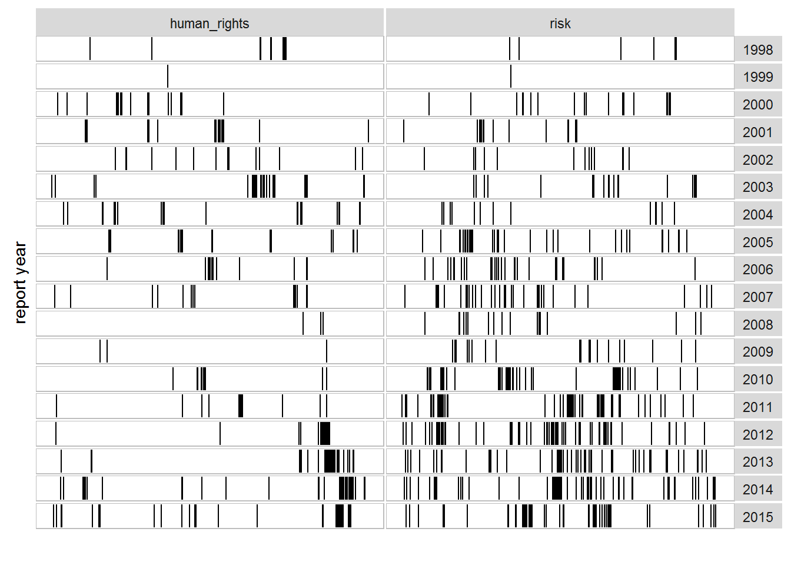

Corporate Social Responsibility
Company Law and Corporate Governance Week 25
06 March, 2023
Agenda
- Scoping out a (kind-of-done) debate about CSR
- Where are we now - the rise of ESG (Environmental, Social, Governance) in very large businesses
- ESG as reporting
A central challenge
CSR essentially involves a shift in the focus of corporate responsibility from profit maximisation for shareholders within the obligations of law to responsibility to a broader range of stakeholders, including communal concerns such as protection of the environment, and accountability on ethical as well as legal obligations
McBarnet Doreen, ‘Corporate Social Responsibility Beyond Law, Through Law, For Law: The New Corporate Accountability’ in Doreen McBarnet and others (eds), The New Corporate Accountability: Corporate Social Responsibility and the Law Cambridge University Press 2007), 9
The Central Challenge
The businessmen believe that they are defending free enterprise when they declaim that business is not concerned “merely” with profit but also with promoting desirable “social” ends; that business has a “social conscience” and takes seriously its responsibilities for providing employment, eliminating discrimination, avoiding pollution and whatever else may be the catchwords of the contemporary crop of reformers. In fact they are – or would be if they or anyone else took them seriously – preaching pure and unadulterated socialism. Businessmen who talk this way are unwitting puppets of the intellectual forces that have been undermining the basis of a free society these past decades.
Friedman Milton, ‘The Social Responsibility of Business is to Increase Its Profits’ (1970) 122 New York Times Magazine 32.
The Central Challenge
A corporate executive is an employee of the owners of the business. He has direct responsibility to his employers. That responsibility is to conduct the business in accordance with their desires, which generally will be to make as much money as possible while conforming to their basic rules of the society, both those embodied in law and those embodied in ethical custom.
[In engaging in CSR,] the corporate executive would be spending someone else’s money for a general social interest. Insofar as his actions in accord with his “social responsibility” reduce returns to stockholders, he is spending their money. Insofar as his actions raise the price to customers, he is spending the customers’ money. Insofar as his actions lower the wages of some employees, he is spending their money.
Friedman Milton, ‘The Social Responsibility of Business is to Increase Its Profits’ (1970) 122 New York Times Magazine 32.
The Central Challenge
We have established elaborate constitutional, parliamentary and judicial provisions to control [redistributive] functions, to assure that taxes are imposed so far as possible in accordance with the preferences and desires of the public – after all, “no taxation without representation” was one of the battle cries of the American Revolution. We have a system of checks and balances to separate the legislative function of imposing taxes and enacting expenditures from the executive function of collecting taxes and administering expenditure programs and from the judicial function of mediating disputes and interpreting the law.
Friedman Milton, ‘The Social Responsibility of Business is to Increase Its Profits’ (1970) 122 New York Times Magazine 32.
The Central Challenge
Here the businessman – self-selected or appointed directly or indirectly by stockholders – is to be simultaneously legislator, executive and jurist. He is to decide whom to tax by how much and for what purpose, and he is to spend the proceeds – all this guided only by general exhortations from on high to restrain inflation, improve the environment, fight poverty and so on and on.
Friedman Milton, ‘The Social Responsibility of Business is to Increase Its Profits’ (1970) 122 New York Times Magazine 32.
The Central Challenge
So, two challenges:
- An ‘ownership’ argument: the agent-duty challenge
- A democracy argument: the control of resources challenge
Leading to an important question:
What grounds for CSR? What job does CSR do?
An interlude re Friedman
Huge companies are not only ‘owned’: they are geopolitical actors
Huge companies are not only ‘owned’: they are geopolitical chokepoints
Giant firms cannot be disentangled from their social and political and economic place power
The Business Case
With the passage of time and the growth of resources being dedicated to social responsibility, it was only natural that questions would begin to be raised about whether CSR was paying its own way, so to speak.
Carroll Archie B and Shabana Kareem M, ‘The Business Case for Corporate Social Responsibility: A Review of Concepts, Research and Practice’ (2010) 12 International Journal of Management Reviews 85.
In other words…
Does Corporate Social Responsibility
Corporate Financial Performance?
Business in the Community
- A primary UK CSR organisation
- A member-funded not-for profit
- Focused on
- brand
- workforce
- risk
- financial performance
Four imperatives for responsible business
First, it needs to build and regain public trust: it has rarely faced more suspicion, scorn and scepticism. There is a fundamental problem in the reputation of business leaders There is a fundamental problem in the reputation of business leaders
A second challenge is to generate forms of economic growth compatible with responsible business values.
BitC CEO Stephen Howard in The Sunday Telegraph and Business in the Community, Better Business: How Leading Corporations are Transforming Communities and Themselves (Supplement to the Sunday Telegraph, Feb 3 2013)
Four imperatives for responsible business
Third, and perhaps most importantly, businesses must ensure core operational strategies deliver the right approach in dealings with staff, customers, investors and the community. This affects supply chains, job creation and retention as well as almost every area of the business. Business leaders must look beyond bottom-line profit at wider impacts on the workplace, environment and communities. Do you have a diverse workforce? How are you providing opportunities for the one million young unemployed? These are some of the questions that responsible businesses must consider.
A fourth issue is the imperative to nurture the next generation of business leaders who understand the importance of doing the right thing.
BitC CEO Stephen Howard in The Sunday Telegraph and Business in the Community, Better Business: How Leading Corporations are Transforming Communities and Themselves (Supplement to the Sunday Telegraph, Feb 3 2013)
A true link between CSR and CFP?
- Attempts to identify links between performance and CSR initiatives have produced mixed results
- Vogel, ‘Is There a Market for Virtue? The Business Case for Corporate Social Responsibility’ (2005) 47 California Management Review 19: the link is tenuous at best
- Carroll & Shabana, ‘The Business Case for Corporate Social Responsibility: A Review of Concepts, Research and Practice’ (2010) 12 International Journal of Management Reviews 85: any link is subtle and comes down to contingent sectoral or even company-level factors
- Velte, ‘Does CEO Power Moderate the Link between ESG Performance and Financial Performance? A Focus on the German Two-Tier System’ (2019) 43 Management Research Review 497: a small positive relationship between CEO power and ESG ‘performance’
But back to Friedman: is this a good thing?
So: why bother?
Empirical evidence of a positive causal relationship moving from social performance to financial performance … promises, for some, a solution to endless debate about the social role and responsibilities of the firm.
Margolis Joshua Daniel and Walsh James P, People and Profits?: The Search for A Link Between A Company’s Social and Financial Performance(Psychology Press 2001).
Towards ESG (and BHR): the question of how
- No large (European or American) firm can do without its Environmental, Social, Governance statements (see here and here)
- A shift from CSR (voluntary; reputation; gift-giving; ad-hoc)…
- …to ESG (investor-led; integrated in familiar corporate governance frames)
- With ‘sustainability’ as its inflection-point
- Highly metric-driven
- With what intent?
- Reputation?
- Recruitment?
- Legitimacy?
ESG as reporting: self-regulation of risk

- ESG as a standard component of corporate governance
- The emergence of an ESG consulting profession
- Specialist knowledge and dissemination of standards
- A set of reporting conventions
- Investor expectations
- (until it challenges the bottom line?)
When we get to business and human rights
- Thinking about business impacts on human rights
- Thinking about what it is for business to have an impact on human rights
- In extraction (directly or as complicit benefiaries)
- In finance (enabling breaches)
- In tech (exploiting ‘legal bubbles’)
- Thinking about what it is for human rights to be ‘encoded’ as a business risk
Questions?
Company Law Week 25 | Ciarán O’Kelly